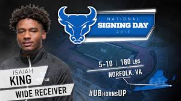

UB's recent recruiting flurry is coming in package deals. Shortly after the Patterson twins committed out of Maryland's St. Vincent Pallotti, UB also made it a double from Norview High School in Norfolk, Virginia as wide receiver Isaiah King will join his teammate Kevin Marks in Buffalo next year.
Marks' commitment broke earlier than King's, but it seems the two committed together after visiting UB together earlier this year. In fact, the two once competed for snaps in Norview's backfield before King switched to wide receiver.
Make no mistake: King is a straight burner, a two-time state champion as a junior in track. It's accolades like those that make you want to believe Rivals' mark of a 4.5 40 for the 5-10 receiver.
King and Marks play at Norview with Rivals three-star QB recruit Darriel Mack, so we'll have to keep an eye out for offensive highlights from the pair of future Bulls this fall.
 2017 Signing Day UB Class Of 2021 Norview to Buffalo